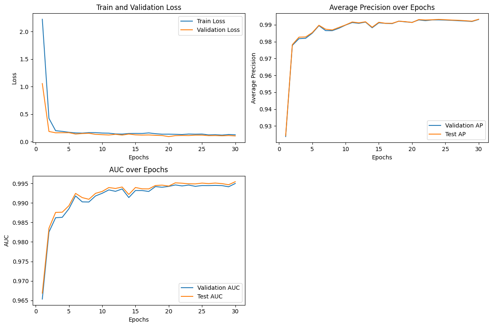
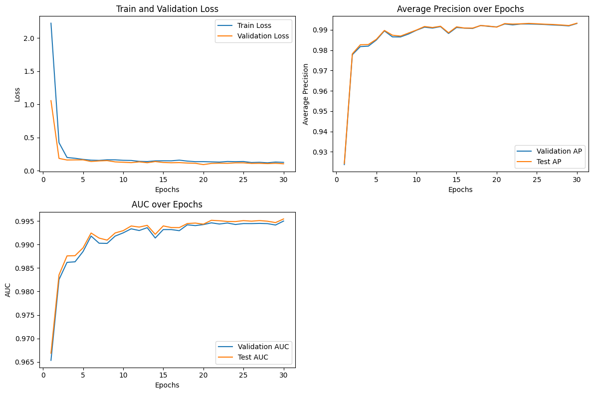
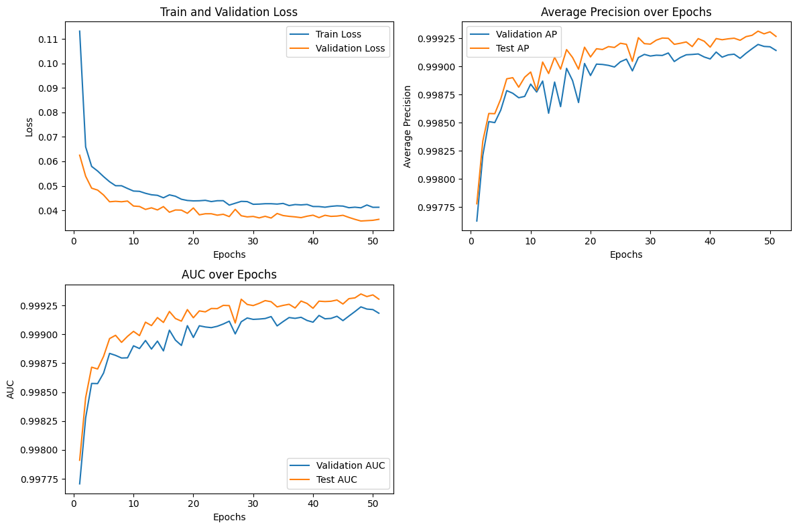
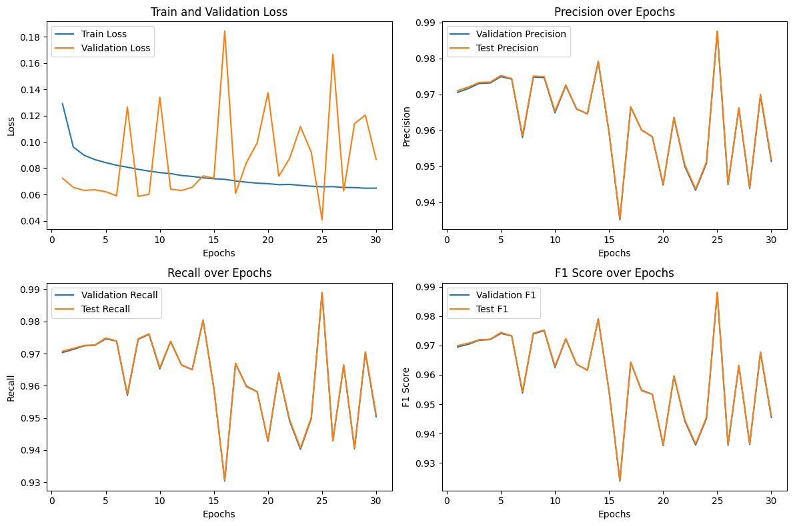
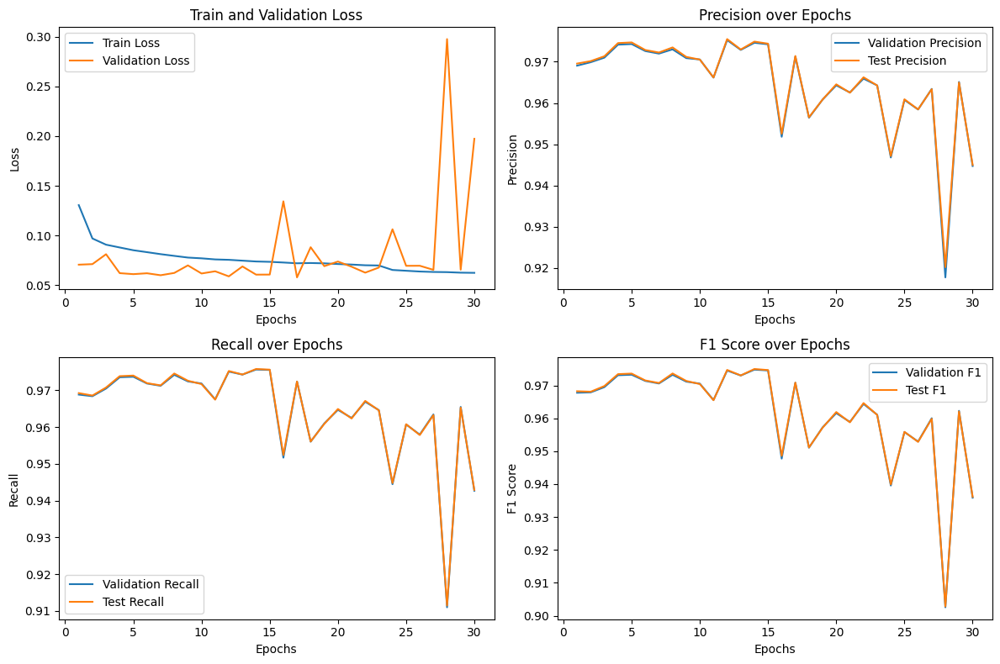

TGN Detection Model
This research is currently a work in progress and started June, 2024.
My research involves using Temporal Graph Networks (TGN) to detect and classify cyber attacks. I have used multiple datasets to train TGN and Quantum Neural Networks that I hope to incorporate into a home network to detect and prevent cyberattacks.
As this is a work in progress, I will post periodically post my results. However, once my research paper has been submitted in the hopes of publication, I will add all details of the project.
TGN Detection Model
QNN-TGN Detection Model
TGN Classification Model
TGN Detection Model
These models will be further tuned and used in a multi-model implementation to further increase accuracy and be used on further datasets in the future.